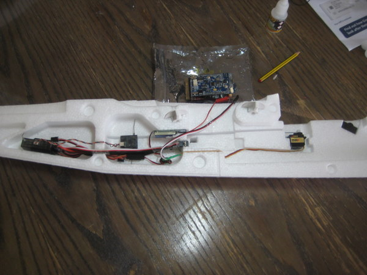

One great aspect about the twinstar is that it ships with the fuselages in two pieces; to some, it may seem a pain to have to glue the fuselage together. To me, however, this is a great feature. It allows me to plan out where I will place all of my electronics, especially the ones that will be buried on this interior of the plane. For my build, I cut two access panels that allow me to access the inside cavities when the plane is glued together. This allowed me to place the receiver in the back cavity, and the BEC in the middle cavity. Also, I moved the elevator and rudder servos to the outside of the fuselage, roughly 3 inches from the control horns on the two surfaces. The reason for this was because with FPV, the plane would easily become nose-heavy. The moving of the servos was an attempt to move the weight tailward slightly.
 Glueing FuselageThe next step of the build is to glue together the two parts of the fuselage. When doing this, take time to make sure you aren't closing off any compartments from future access; cut yourself small access holes on the interior of the fuselage. Also, during the glueing process, install the wing mounts where the wing will screw into the fuselage. Test the bolts while the glue is still drying, just to ensure that they are properly aligned. Let this set overnight at least, to ensure a solid bond. While this is happening, you can work on the wings.
The wings mount to the fuselage with two nylon bolts, joined together with a carbon spar and a plastic wing-joiner. I chose to glue my two wing-halves together, simply because my wiring of the two ESC's was done such that there was no slack for them to be pulled apart. If you wish to keep the wing in two parts, keep that in mind when soldering the ESC's so that they are removeable from each other. Below is an example wiring diagram for the build. If I were building this again, I would make the wing wiring better; this is the main issue with the way I built it. When I glued the wings together, I immediately made this plane difficult to transport. If I were doing this again, I would make the wiring more modular. This means that the wings would be seperable, with each ESC and aileron servo plugging into a wiring harness in the fuselage, instead of plugging into each other.
Attaching the Motors and Aileron ServosThe next step is to glue in the motor mounts, and mount the motors. Before doing this, prepare the wire harness for each motor. Also, install the wing servos, burying the wire in the channel. The servo wires go into the same channel as the ESC wires. Once this is done, the wings can be mounted to the fuselage. Make sure that there is enough slack for the battery cable to reach the front of the cavity where the battery will be sitting.
Having two motors isn't always great; keep in mind that if one motor goes out, the plane will roll incredibly to one side. This nearly caused a crash for me once, so be mindful of this.
I recommend putting a flight controller in this platform if you plan on doing long range. With such a large frame, there is plenty of room, and the peace of mind that it provides is well worth it.
Test different power combinations with the battery. 4S can be run, and may actually provide better efficiency.